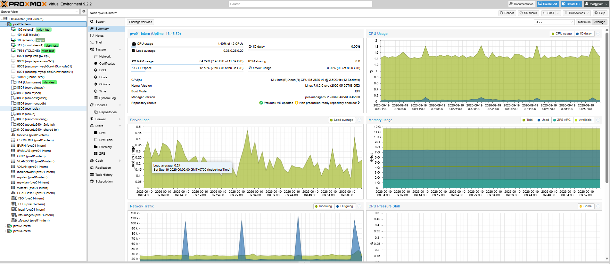
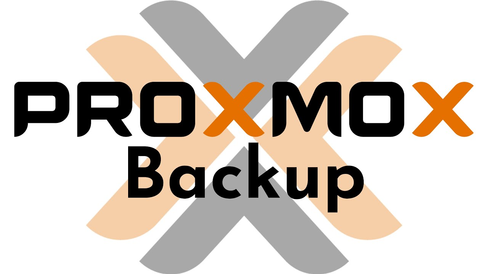

Clear visibility
One view of your cluster.
An open platform for virtual machines, containers and resilient infrastructure.
Founded in 2005 by Martin Maurer and Dietmar Maurer, Proxmox released Proxmox VE in 2008 and has continued expanding its open-source product portfolio.

The Vienna-based company develops open-source server software and provides enterprise subscriptions, technical support and training for its products.
KVM virtual machines, LXC containers, software-defined storage and networking — under one web interface.
Built on Linux and proven open technologies, with open APIs and freedom to choose the infrastructure underneath.
Separate hypervisors, storage layers, network tools and backup workflows increase operational overhead.
Run isolated Linux and Windows workloads with dedicated virtual hardware.
Share the host kernel for fast deployment and high guest density.

Live visibility in Proxmox VE. Deeper insight with your monitoring tools.
SMTP and webhooks are Proxmox notification targets. Messaging channels require configuration. *WhatsApp requires an external integration.
The HA manager can restart the workload without copying its disk first.
Recovery point depends on the latest completed replication.
Local disks, shared appliances and distributed storage connect through the same Proxmox VE interface.
Replicas on the surviving nodes continue serving data.
Separate workloads and choose how networks connect across your infrastructure.
Capabilities depend on zone type and network design. VXLAN does not encrypt traffic.
Integrated with Proxmox VE. Built for efficient backup and recovery.
Scheduled VM backups

Deduplicated backup datastore
AWS · Cloudian · Compatible
Datastore backend + local cacheLTO · Offline archive
Filesystem-backed datastore*
Users · Roles · Resource access
A second layer of identity verification
Security groups · IP sets · Rules
PAM · Proxmox VE · LDAP · AD · OpenID Connect
One view of your cluster.
Compute, storage and network.
Make more of your hardware.
HA and backup working together.
Add nodes as demand grows.
Roles, identity and permissions.
Open-source virtualization for enterprise infrastructure.
Official screenshots credited to Proxmox Server Solutions GmbH. This presentation is an independent adaptation.